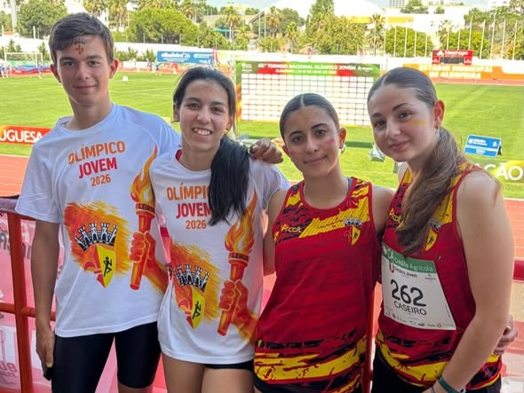

Os nossos atletas, Bruna Silva, Joana Caseiro, João Diogo Granja e Helena Sousa e o treinador, António Graça,
representaram a Seleção Distrital de Leiria que conquistou um brilhante 2º lugar nacional, demonstrando mais uma vez a
força do atletismo do nosso distrito.
Bruna Silva foi 8ª na prova de salto em comprimento (Sub-18) ao saltar 5.29m.
Joana Caseiro foi 10ª nos 800m (Sub-18) com o tempo de 02:29.39min.
João Diogo Granja terminou em 7º lugar os 1500m obstáculos (Sub-16) com recorde pessoal de 04:43.12min.
Helena Sousa foi 15ª nos 1500m (Sub-16) com recorde pessoal de 05:32.30min.
Para nós é mais um momento de orgulho. Para os nossos atletas foi certamente um fim de semana memorável e que jamais
vão esquecer.
Parabéns, ADAL - Associação Distrital de Atletismo de Leiria!
Bruna, Joana, João, e Helena no Olímpico Jovem Nacional
Albufeira recebeu este fim de semana, dias 30 e 31 de maio, o 43º Torneio Nacional Olímpico Jovem, uma das provas mais ambicionadas e especiais para os jovens atletas Sub-16 e Sub-18.
